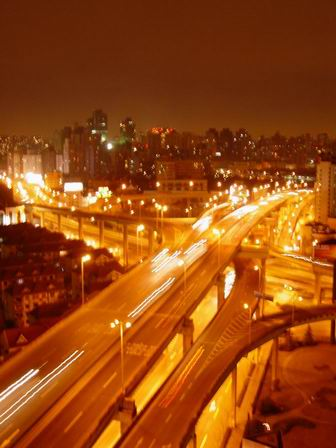
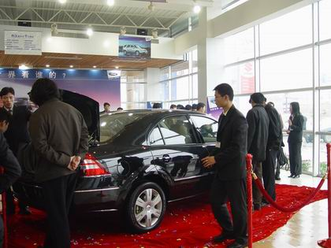
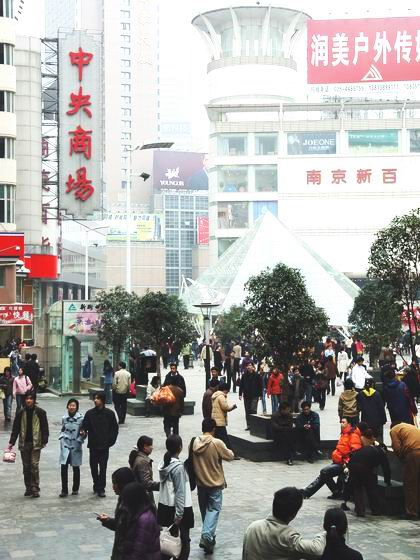
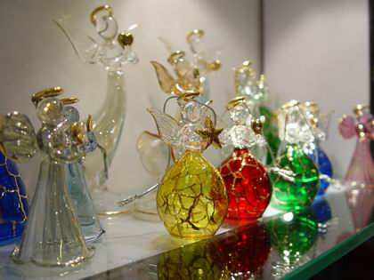
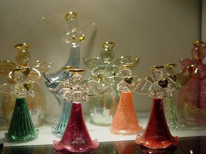
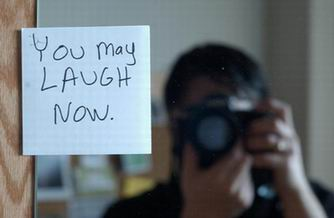
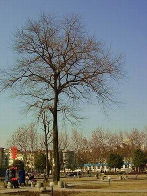

Bess的生日 @ Mar 06, 2004


暖色的寒夜 @ Feb 29, 2004
到达上海虹桥宾馆，已是晚上将近11点时分。从宾馆窗口拍摄的高架夜景。

昨天记录 @ Feb 22, 2004
昨天起来已经十点多钟，外面下了雨。出租车的广播里正在报道的也是蒙迪欧南京露面的消息，赶到了大明路的福联，展厅里已经有很多人了。所有的销售和工作人员都穿了统一的制服，场面还算热闹。新款蒙迪欧2.0分白色、闪电银、墨绿色、黑色、香摈色五种，我们选的闪电银色、尊贵版。
听说有人加价1.5万，想要和第一批客户一起在三月底提车，被销售人员当时谢绝。据说从去年开始预定此款车的南京客户已经有100位。到我们付款时，已有16位客户上午支付车款。新款的蒙迪欧较之老款做了很多改进，尤其我特别不喜欢的胡桃木内饰，现在是哑光效果，颜色更暗，看上去还是很不错的。
—南京大明路上的福联专营店，统计下来，当天订出整整50台—蒙迪欧以高性价比再度入市

下午，和BESS、丸子看电影《蒙娜丽莎的微笑》 ，你想知道“蒙娜丽莎的微笑”是否代表了真实“快乐”吗？奥斯卡影后朱莉娅·罗伯茨主演，《蒙娜丽莎的微笑》(Mona Lisa Smile) 由索尼旗下的革命工作室(Revolution Studios)制作，《四个婚礼和一个葬礼》的导演迈克·尼维尔执导。
2003年12月19日是《蒙娜丽莎的微笑》在美国公映之日。在此之前，就已经有很多人在没看过片子的情况下大放厥词了。
英文中有个词叫“chick flick”，直译过来比较粗俗，叫“小鸡电影”说得文雅一点，可以叫“女性电影”。如果连电影都有性别之分，那么“性别歧视”这个东西也一定会如影随形。在女权主义叫得最响的美国，男性公民们却总是对“半边天”大不敬，他们用“给娘们拍的电影”来形容那些以女性为中心，男性则退居配角地位的影片。冷嘲热讽的背后是狂妄，心虚甚至嫉妒。
按照他们的标准，《蒙娜丽莎的微笑》是一部典型的“小鸡电影”。她的演员阵容是清一色的女星，而且在各大权力榜上跟汤姆·克鲁斯之类的“太阳神”平起平坐，让男人自惭形秽。
现年36岁的朱莉娅·罗伯茨在最近一次新闻发布会上开宗明义地说：“我们拍的不是‘小鸡电影’，我们拍的只是一部电影”。她接着说，自己之所以对电影中的20世纪50年代心醉神迷，是因为“那时女性的声音正处在社会变革的风口浪尖。
“故事里隐藏着一个强有力的话题，那就是女人该做什么，不该做什么。我们几乎从来没有在电影中公开讨论过这个问题。”
上周刚买SONY DSC F717，顺便在新街口附近试试机器。玻璃天使的近拍效果，是我原来的DSC-P5做不到的。



蝴蝶飞不过沧海 @ Feb 21, 2004
POSTED BY 六翼的天使
她是我的一个好朋友，他也是我的一个好朋友。
他在冰天雪地的北方读书，然后又在冰天雪地的北方工作。
她在温暖的南方读书，每天漫步在青青校园。
我说，你们恋爱吧。
他们没有见过面。
他们开始书信往来，
他们开始电话私语。
他说，你介绍的这个女孩很不错，我想相处一段时间，
她说，你介绍的这个朋友很出色，谢谢你。
时间飞逝
转眼寒冷的冬季就要来临了。
她飞到了他所在的那个城市
他们一起去那个有风的城市，那个潮湿的湖泊。
转眼冬季就要过去了，
她又飞到了那个冰天雪地的城市
欢乐和笑容透出在他们的照片上。
时间真快，
转眼就到了情人节，他们认识一年半了。
他没有给她玫瑰，甚至电话，
他有理由
她说如果要做一件事情，就不会有理由。
她觉得他心里没有她
他不原意承认他们之间的关系
她给他去了最后一封信
他的回信使她的泪水再也无法坚强
原来感情是这么的遥远
就象蝴蝶飞不过沧海
一年半的感情，如果还不能说明什么的话
就将他忘记好了
微笑着对待明天
前面的路不会寒冷
后记：she said her heart was broken, which make me vert sad. But I can’t help her. I know it is not her fault, not his, not mine. Love always like a leaf, no one know where it will drift.
*******************************
旋木- 王菲
拥有华丽的外表和绚烂的灯光
我是匹旋转木马身在这天堂
只为了满足孩子的梦想
爬到我背上就带你去翱翔
我忘了只能原地奔跑的那忧伤
我也忘了自己是永远被锁上
不管我能够陪你有多长
至少能让你幻想与我飞翔
奔跑的木马让你忘了伤
在这一个供应欢笑的天堂
看著他们的羡慕眼光不需放我在心上
旋转的木马没有翅膀
但却能够带著你到处飞翔
音乐停下来你将离场
我也只能这样
~~ @ Feb 21, 2004
妈的，该死的春天来了！NND，我仍然还在生病。

以下转载自“北京女病人”
—如果伤害可以循环，那么一定要嫁祸于人，才是良性。
—一直以来，就觉得咱们的爱情，太象目的而不是手段了。这其中缺少一种大无畏的GAME精神，换句话说就是玩儿都玩儿得不敬业。在爱情里前怕狼后怕虎叶公好龙扭扭捏捏，还美其名曰含蓄是俺们的美德。任何一个出了青春期的男女在表达感情的时候都显得深沉阴险无比，好象这才是正路子硬道理一样。
—现在，已经是情人节了。一个说得已经腻烦的日子。却不知道怎么就会反复想起这第一句，挥之不去。
其实你看，我已经根本不在意这样的节日了。这应该是最虚伪的节日之一，象交谊舞一样虚伪。若是很亲密很熟悉，在舞场上搂着腰转不如在床上搂着转；如果这人根本就不大认识，被一把汗湿的手攥着腰，跟着人家的节奏，热气喷在额头上，万一再有个口臭什么的，真别扭。哈哈，要是好兄弟姐妹一起跳舞，更是搞笑，还不如找个地方一起打球吃喝呢。情人节亦然。老夫老妻用不着过，半生不熟犯不上过，偷情的倒是想，不过也出不来了。这一天是表示忠贞的，必须在家呆着，就好象大伙儿都在愚人节壮着胆子说我爱你一样。
—黄色小说有固定的套路，看多了就生厌。远不如情色小说动人心魄。就好象正面全裸不如重重衣衫间掩映来得诱惑人心。它不论是怎么开始的，最终的结果都是用快感征服了对方。所以，黄色小说的危害性在于它叫一些人误以为，性是这个世界上最重要最有效的东西。
—俺对某人说，胡搞不难，难的是搞出美感。表第二天起来觉得龌龊羞耻似吞食巨大绿豆苍蝇一只。某人对俺说，你说的是恋爱，胡搞是不需要美感的。只要有快感就够了。
中国式的冷漠 @ Feb 20, 2004

同事带着一个高大的法国客人走进办公室，法国客人微笑着SAY HELLO！全办公室的人表情木然的看了他一眼，这之中或许瞬间出现似笑非笑的面孔。同事和客人一同离开，客人朝办公室里的人招手，微笑，SAY GOOD-BYE！依然是全场表情木然。大部分欧美客人尤其不吝啬微笑！这种状况下，不知道大家是否会有点“来不及回应”的尴尬？我也想向大家微笑来着，可担心被人说......
拖着 @ Feb 14, 2004
董事会将在月末召开，也许将在那时辞职。
在一个制度化的机构中工作是一件轻松而又可能痛苦的事。特别是当你觉得一切努力都是徒劳的时候，会觉得自己是在骗取工资。
拖着——很多人的生活状态就是这样两个字。茶问我“你是悲观主义？”我想不是，但肯定不是乐观主义者。
突然想读书，是正式地那种读书。为什么——不知道！不是想贴金，对我这样年纪和经历的人来说，学历已经没有价值和意义。
一辈子和那么多学士、硕士以及博士一起工作过，从来没有感觉到智力的自卑。也许只是想填补连小学毕业证书都没有的缺憾。
但是读什么呢？可能只有英文之类耗费时间的学科适合点。
对我来说，生命之旅越来越短了，然而可支配的时间将会越来越多。
转载于乌鸦嘴
2003中国年度十佳blog揭晓 @ Feb 13, 2004
由中国各大Blog站点首次联袂，推出的首届“2003年度十佳Blog评选” 现已圆满结束。祝贺以下获得十佳荣誉的朋友。
这里我要衷心感谢支持Chinese Tea的朋友们，如题头所写：“生活就如同一杯茶,苦涩而又香醇,浓烈而又耐人回味。欢乐、幸福、艰辛、挫折、磨难、困惑,当这一切都成往事,我们会觉得那是一份属于自己独有的财富和珍藏,请将这份感受与大家一起分享”，希望2004年的Chinese Tea仍然保持祥和、团结的氛围，给大家一个交流与分享的愉快场所。感谢你们的支持！
获奖名单:[中文类]
- Lei GAO Photography
- 竹笋炒肉
- 一亩三分地
- 西园
- 北京女病人
- danger s blog
- Chinese Tea
- 日落酒馆
- Doverbear的音乐杂记
- 生活像啤酒一样苦像巧克力一样的甜
[英文类] - flying chair - rainbow - English – The Real Deal - Wangjianshuos blog - big white guy - leylop - gweilo diaries - sinosplice - wo bu zhi dao - Byoi in Hong Kong
Hello world! @ Feb 12, 2004
Welcome to WordPress. This is the first post. Edit or delete it, then start blogging!
简单记事 @ Feb 09, 2004
南京汉中门广场的下午,阳光很好。
